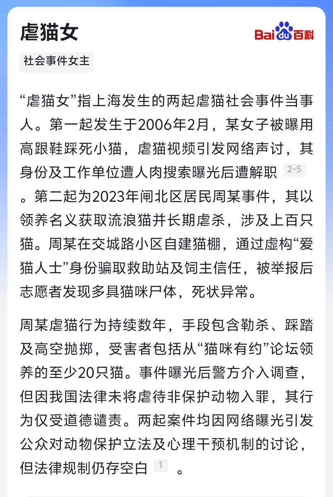
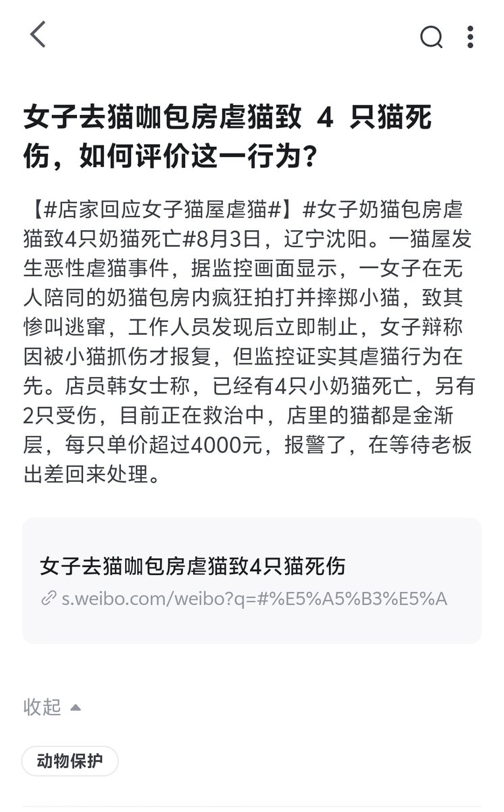

板板板板栗🌰
@tong35018157
@QzuserX @ZiggerBorea 女性有没有讨厌猫的权利


𝑸𝒁𝑼𝑺𝑬𝑹
@QzuserX
再说一次，虐猫跟厌女-父权有干系，这脑回路也是绝了。
集美天生就有“爱”猫的能力，国内网络最早的“爱”猫视频发布于06年，该女子用高跟鞋爱死小猫。23年时还有个周姓女子，以“爱猫人士”的身份收养了百来只猫，并将它们一一爱死。何况去年刚好有新闻，又是一女子进猫咖，爱死了4只猫。 https://t.co/HoSGHJVDNw https://t.co/OdRhXeVicf